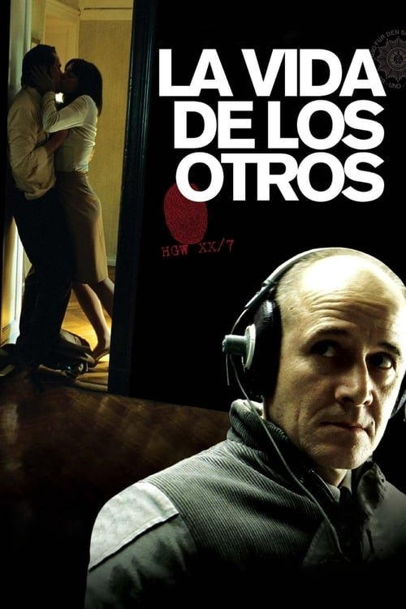

La vida de los otros (2006)
Sinopsis Rápida
En la opresiva Alemania Oriental de 1984, un agente de la Stasi se ve envuelto en la vida de una pareja, descubriendo secretos que cambiarán para siempre su percepción del mundo y su propia moral.
Sinopsis Detallada
La película sigue al capitán Gerd Wiesler, un agente de la Stasi, encargado de espiar al escritor Georg Dreyman y a su amante, la actriz Christa-Maria Sieland. A través de la vigilancia, Wiesler se adentra en la intimidad de la pareja, inicialmente cumpliendo su deber con frialdad. Sin embargo, a medida que observa su vida, la escucha y presencia la belleza de su amor en medio del régimen opresor, empieza un proceso de transformación interna. "La vida de los otros" es un intenso drama psicológico que explora los límites de la vigilancia, el poder del arte y el impacto de la moral en un régimen totalitario. La tensión crece exponencialmente a medida que Wiesler se enfrenta a un dilema moral trascendental que pondrá en riesgo su carrera y su vida.
¿Por qué tenés que verla?
- Una historia cautivadora que mantiene la tensión hasta el final.
- La magnífica actuación de Ulrich Mühe como el agente de la Stasi es inolvidable.
- La película ofrece una poderosa reflexión sobre la vigilancia, la libertad artística y la moral en tiempos de opresión; su impacto aún resuena hoy en día.
- Excelente desarrollo de personajes y una narrativa inteligente.
Idea Extra
Comparación entre la realidad de la Stasi y la ficción en la película: análisis de la precisión histórica y las licencias artísticas.